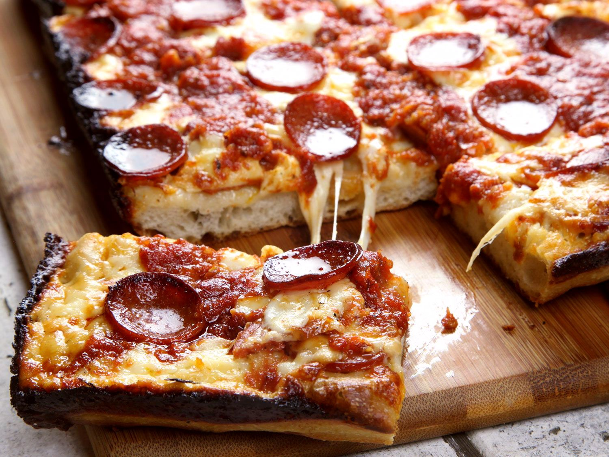

Detroit Style Pizza

Description
An authentic Detroit style pizza recipe from The Food Network's own Jeff Mauro. Crust to crust is a must!
Ingredients
- 3 tablespoons olive oil
- 1 batch Pizza Dough
- 8 ounces sliced pepperoni
- 16 ounces brick cheese
- Pizza sauce, store-bought or homemade
Directions
- Position an oven rack in the bottom of the oven and preheat to the highest temperature setting, 500 to 550 degrees F.
- Pour the oil in a large, square metal cake pan. Put the Pizza Dough in the pan and gently stretch it out to fit so the dough reaches the corners.
- Layer the pepperoni on the dough. Then lay the cheese cubes all over, especially around the perimeter up to the edge of the pan (this creates the coveted crispy cheese crust). Dollop the pizza sauce on top in 3 lines.
- Bake in the ultra-hot oven until bubbly and golden and a crispy cheese crust has formed, 10 to 15 minutes. Using a fish spatula, loosen up the edges and place on a cutting board. Slice into squares and serve!